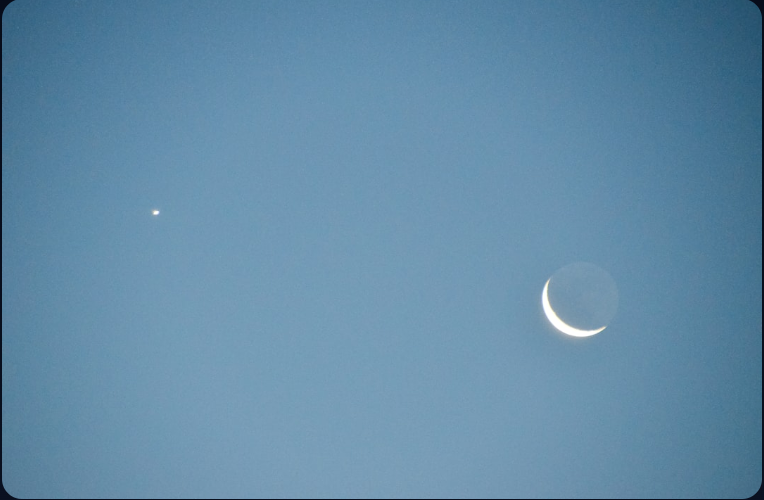
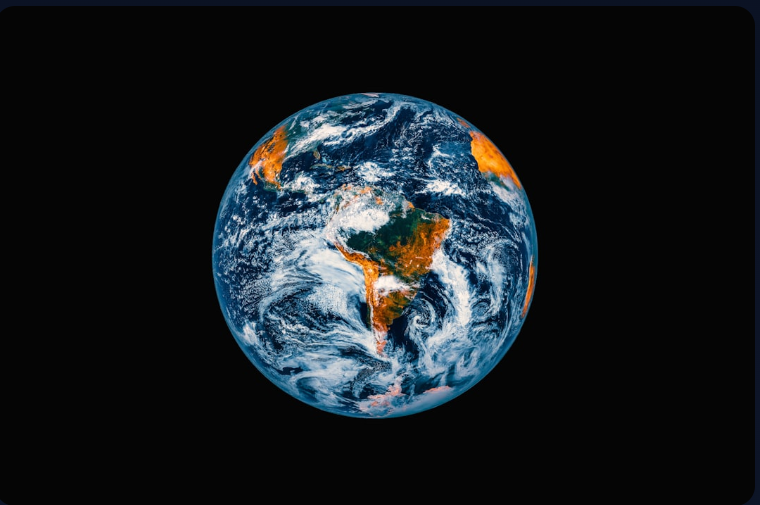
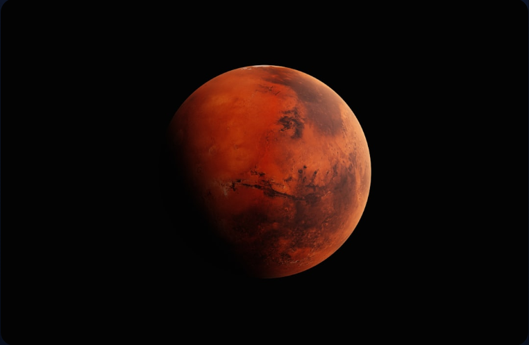
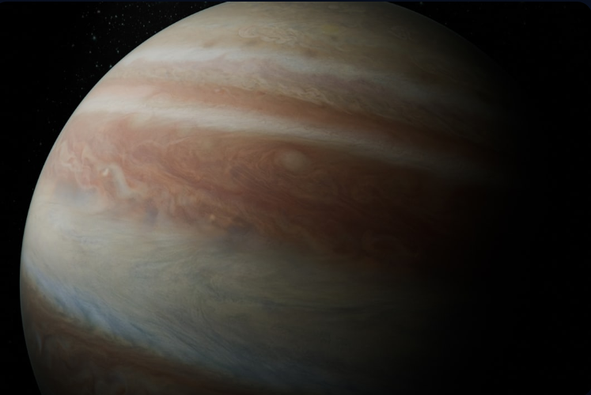
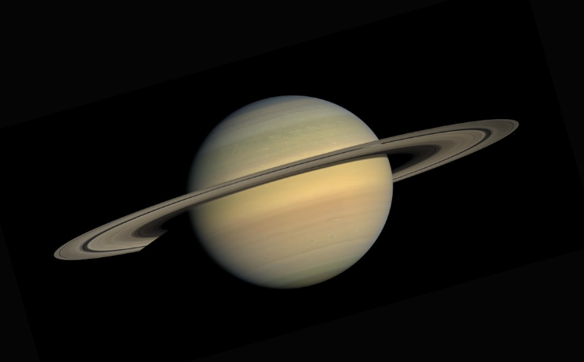
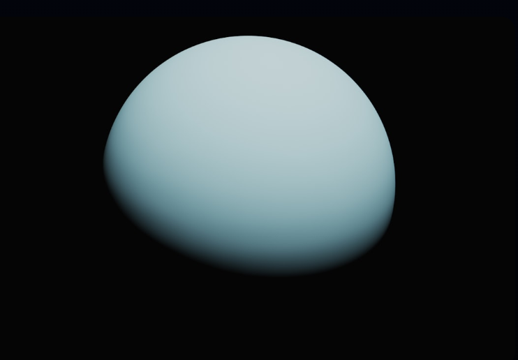
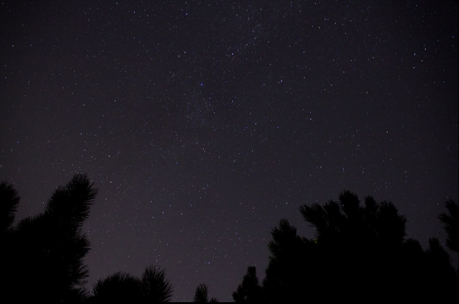

THE SOLAR SYSTEM
Expore the wonders of our cosmic neighborhood, form the scorching
surface of Mercury to the icy realms
of Neptune
Expore the wonders of our cosmic neighborhood, form the scorching
surface of Mercury to the icy realms
of Neptune

At the heart of our solar system lies the Sun, a massive sphere of hot plasma that accounts for 99.86% of the
system's total mass. This incredible star provides the light and warmth necessary for life on Earth and
governs
the motion of all planets through its immense gravitational pull.







